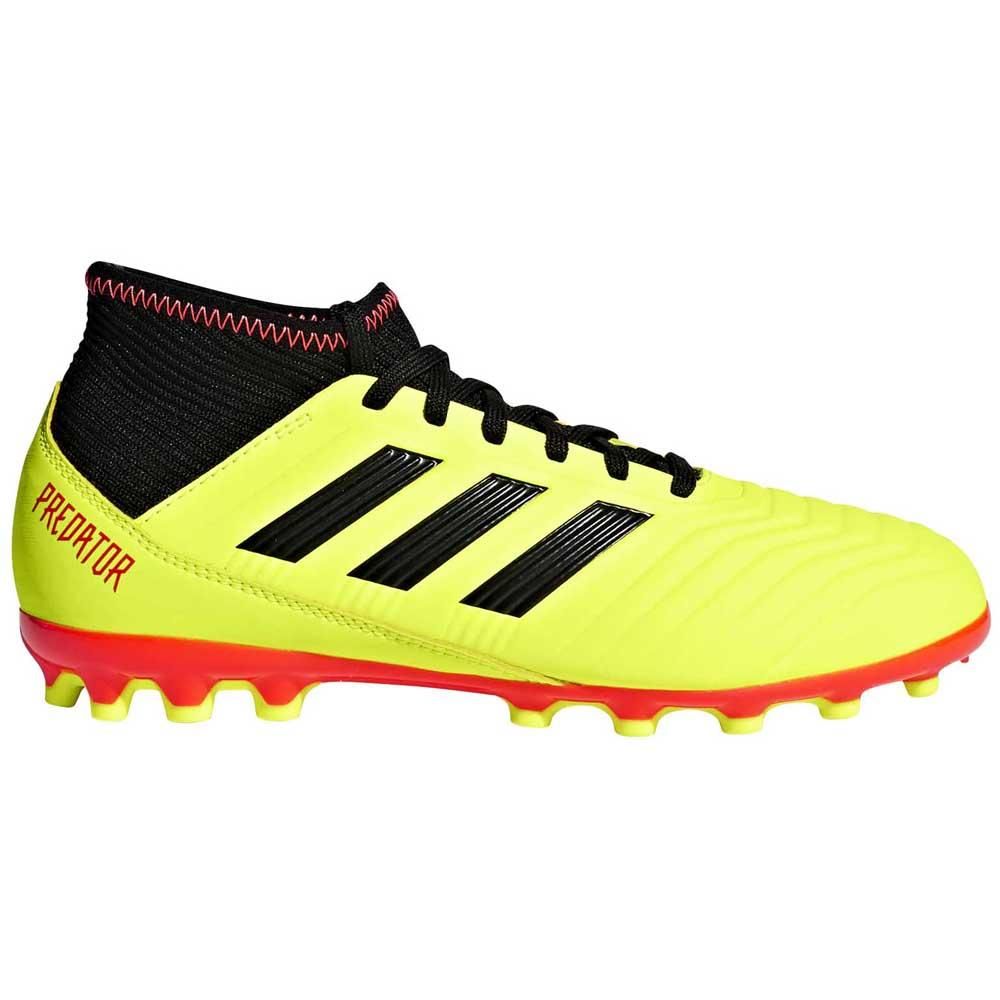
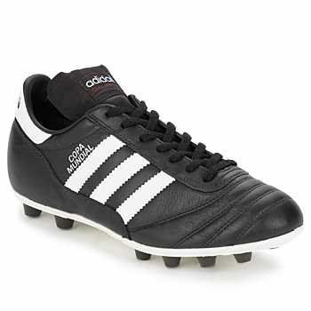
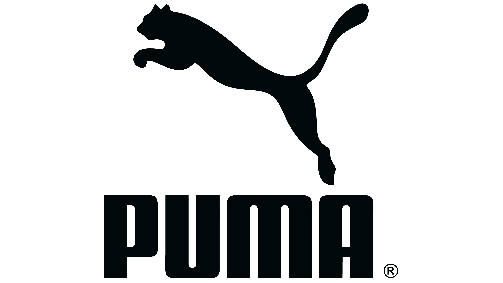

Marcas de calzado
Vamos a hablar sobre cuales son las mejores marcas de calzado, pero en este caso lo vamos a hacer sobre calzado deportivas. Hay una gran variedad de marcas deportivas, pero vamos a hablar sobre las mejores marcas de calzado deportiva, que yo considero.
Es cierto que dependiendo de qué deportes estemos hablando, hay otras marcas que son mejores que otras, para ello nos vamos a centrar en marcas deportivas en el fútbol. Las mejores marcas deportivas, que yo considero, son:
Nike
Adidas
Puma
Nike

Historia
Como ya se sabe, Nike es uno de los grandes proovedores mundiales, surgió en 1971 cuando Phil Knight y su entrenador decidieron lanzar su primer producto propio ya que anteriormente se dedicaban a repartir calzado.
En 1964, tras un año de negocios, vendieron más de 1000 pares de zapatos por lo que en 1966 abren por primera vez en Pico Boulevard, Santa Mónica, California . En 1971, tras la mala relación con Onitsuka Tiger , deciden prepararse para lanzar su propia marca de calzado diseñado por Carolyn Davidson . Se utilizaron por primera vez el 18 de junio de 1971 y el 22 de enero de 1974 se registró en la Oficina de Patentes.
Modelos
Adidas

Historia
Adidas es una compañía multinacional alemana fundada en 1949 que fabrican calzados, ropas deportivas y otros productos relacionados con el deporte..., es una de los mayores proovedores junto con Nike.
Se fundó en enero de 1949, en el que tiene sus orígenes en las empresas previas de la familia Dassler, fundada a principios de la década de 1920 en Alemania por Adolf Dassler junto con su hermano Rudolf Dassler . Confeccionaban zapatillas y pantuflas sin marca adquirida, y también calzado con clavos para deportistas. Ambos lograron colocar sus productos en el equipo alemán de atletismo. Pero el golpe maestro fue fichar a Jesse Owens , el atleta que deslumbró en los Juegos Olímpicos de Berlín 1936. Después de las cuatro medallas de oro de Owens, el nombre y la reputación de los zapatos Dassler se hicieron conocidos por los deportistas del mundo y sus entrenadores.
Modelos
- Predator

- Copa Mundial

- Nemesis

Puma

Historia
Tras un conflicto entre los hermanos que fundaron Adidas, el pequeño, Rudolf , decide crear otra marca para hacer competencia a su hermano mayor, Adolf.
Todo esto fue en 1968. La empresa alemana utilizó el significado de la palabra "puma" en español para incluir un imagotipo figurativo en su logo.
Modelos